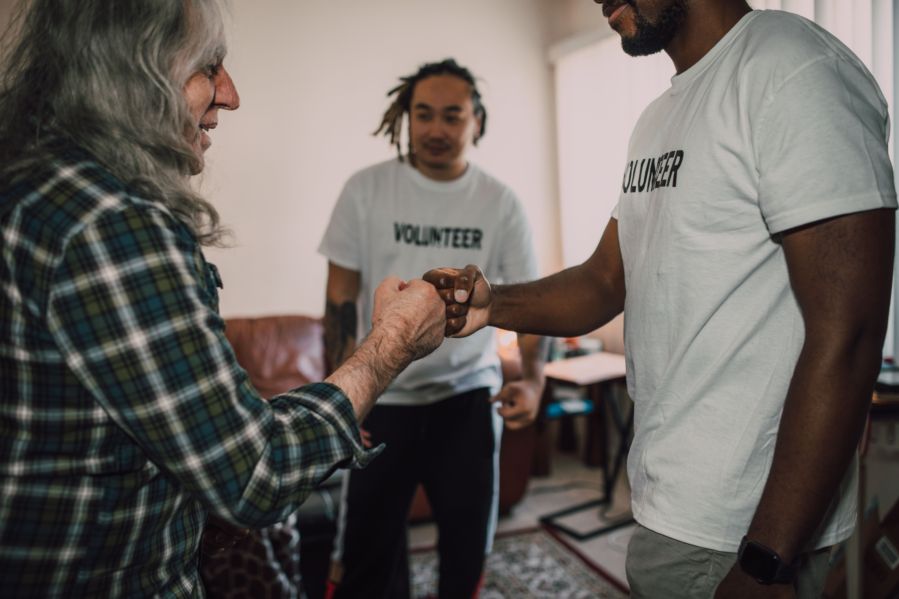

ONG Conecta
Conectamos pessoas dispostas a ajudar com comunidades que precisam de apoio. Seja voluntário, faça uma doação ou ajude a levar educação a quem mais precisa.

Quem Somos
A ONG Conecta é uma organização social que aproxima voluntários, doadores e comunidades. Acreditamos que pequenas ações, somadas, transformam realidades.
Nossa Missão
Apoiar comunidades por meio de ações solidárias, educação e inclusão social.
Nossa Visão
Ser referência em solidariedade, conectando quem quer ajudar a quem precisa de ajuda.
Nossos Valores
Respeito, transparência, empatia e compromisso com as pessoas e com as comunidades atendidas.
Como Você Pode Ajudar
Escolha a forma de participar que combina com você e faça seu cadastro. Leva menos de um minuto.
Fazer cadastro